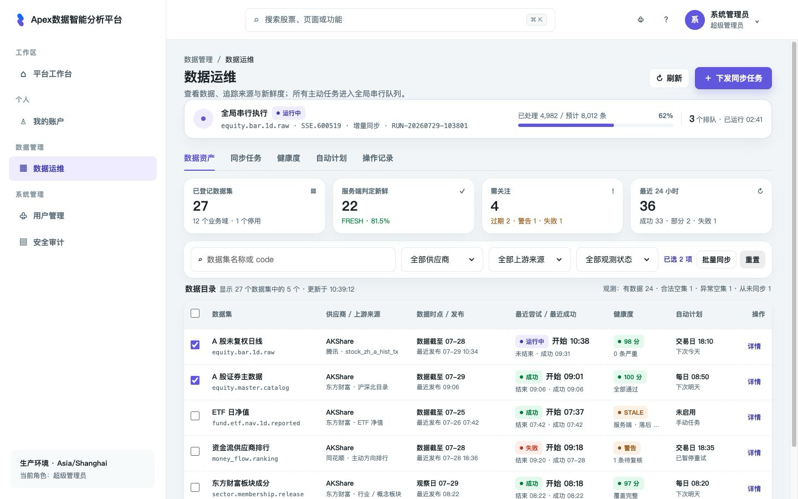
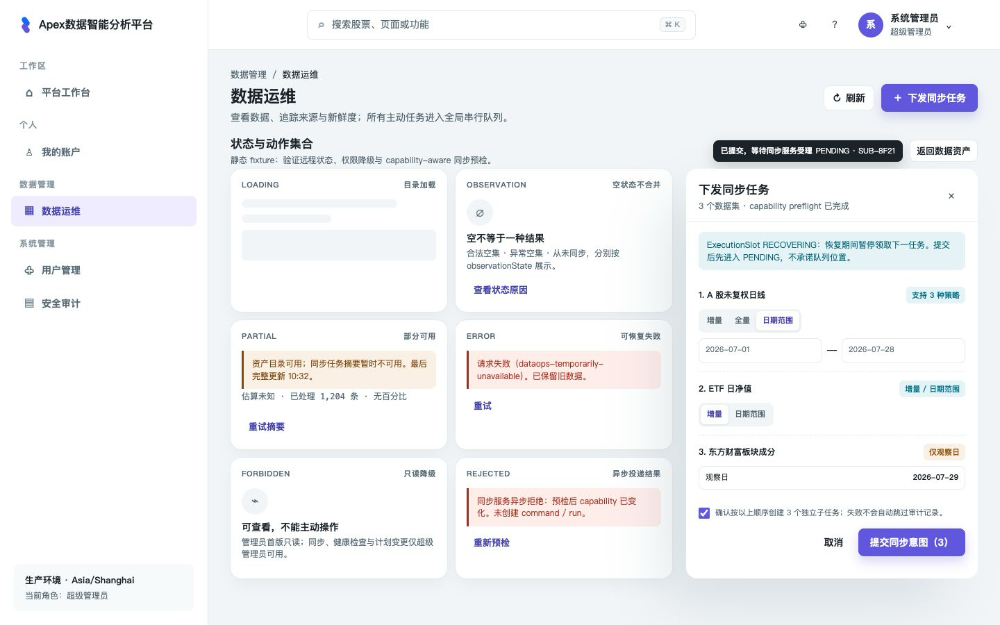

数据可用性无法在一个界面判断
当前数据能力分散在 CLI、任务、checkpoint、quality 与 publication 中，Web 没有统一运维入口。
Service Web · Technical solution 0006
为管理员提供统一的数据资产目录、来源血缘、新鲜度、串行同步任务、健康检查、自动计划和主动操作记录。 选择复用现有白色桌面壳层，以五个任务型 Tab 组织信息；Contract 0023 的 19 条公开 POST 与状态语义已完成跨服务收口，生命周期仍保持 Proposed，生产接入前继续用 fixture / MSW 验证。
当前数据能力分散在 CLI、任务、checkpoint、quality 与 publication 中，Web 没有统一运维入口。
顶部常驻全局运行条；资产、任务、健康度、自动计划、操作记录各自保留清晰责任边界。
旧 CLI / Celery / schedule 未全部收口前，只能显示“互斥迁移中”，不能仅凭界面承诺全局唯一。
新增
/data-operations。页面标题下先显示全局唯一运行任务与排队数量，再提供 “数据资产 /
同步任务 / 健康度 / 自动计划 / 操作记录”五个 Tab。
ADMIN 与
SUPER_ADMIN 可读；同步、主动健康检查、取消 /
重试和计划管理 仅
SUPER_ADMIN 可用。服务端始终再次授权。
Web adapter 只实现 Contract 0023 的 19 条路径并复用共享
POST transport； 业务调用方不能选择 HTTP
method。合同仍为 Proposed，表示尚未实现 /
接受，不表示字段可自行改写。
datasetCode 唯一。
| 维度 | 结论 | 设计影响 |
|---|---|---|
| Actor 与入口 | 平台管理员从桌面侧栏“数据管理 / 数据运维”进入。 |
复用受保护 AppShell、权限路由和顶部账号上下文。
|
| 首要业务问题 | 哪些数据可用、来源是否可信、是否足够新、当前是否有故障或任务占用。 | 首屏顺序固定为全局运行条、资产摘要、筛选与数据目录。 |
| 首要任务 | 定位异常数据集并安全下发修复性同步或健康检查。 | 行详情保留上下文；写动作先 capability preflight，再确认进入串行队列。 |
| 次要任务 | 调整自动计划、复核失败原因、追踪命令 / 运行结果、审计谁做了什么。 | 分别进入任务、健康度、自动计划、操作记录 Tab，避免首屏堆叠。 |
| 成功 | 授权意图持久化不等于下游已受理，更不等于同步成功；必须持续看到 delivery 与权威 run 结果。 |
先显示 submission ID；只有
deliveryStatus=ACCEPTED
才显示下游已受理，并可跳到权威资源。
|
| 失败恢复 | 网络未知结果复用幂等键；异步拒绝需重新预检；运行失败保留安全错误码与最近成功版本。 |
保留旧数据、显示 stale / partial；刷新或重进批次只查询
commands/detail，不靠本地选择恢复。
|
| 权威来源 | service-api 是 Web 唯一边界；service-data-sync 持有运行、质量、发布与内部恢复水位等权威状态。 |
commands/detail 是批量聚合与有序 child runs
唯一来源；health/checks/detail 是主动健康检查批次恢复
来源；Web 不接触内部 checkpoint。
|
| 新鲜度与时间 | 必须区分最近尝试开始 / 结束、最近成功、最近发布和数据截至时间。 |
直接展示服务端 freshnessStatus、lag、reason 与
evaluatedAt；禁止本地日期运算。
|
| 权限与敏感性 | 目录和安全摘要可读；raw、内部 URI、秘密、未脱敏样本不可见。 | 列表只展示稳定错误码和安全摘要；详情不展示 payload_ref 或供应商凭据。 |
| 分享 / 重访 | Tab 与目录筛选需要可分享；批量选择和未提交表单不应写 URL。 | URL 持有 tab、q、provider、upstream、status、health、cursor；临时选择留本地。 |
| 桌面与可访问性 | 默认 1440×900，最低宽度 1200；鼠标与键盘并重。 | 表格内部滚动、Dialog 焦点锁定、Drawer 恢复焦点、状态不只靠颜色。 |
分类 此工作新增路由、主要任务与信息架构，属于新页面，必须通过桌面原型门禁后才可写生产页面。
调研依据为当前仓库源码、service-web README、 service-data-sync README 与已实现模型；以下只把已验证现状标为事实。
POST，复用现有 access-token 注入
Authorization: Bearer …，并只暴露安全 Problem
code；Refresh Cookie 仅用于刷新 access token，绝不授权业务路由。
qualityGate=BLOCKED 会阻止新版本发布；旧
publication 继续可见。
supportedModes /
scheduleSupportedModes。
| 业务域 | 仓库已实现能力 | 运维界面注意点 |
|---|---|---|
| 证券与行情 | A 股主数据 / 生命周期、日周月线、复权因子、公司行动、公司概况。 | 周期接口独立；不能声称周 / 月由日线生成。生命周期来源与目录来源也需分开。 |
| 板块与行业 | 东财行业 / 概念目录、三周期行情、成分、EOD 横截面；申万三级 taxonomy 与估值。 | EOD 有 shadow / publish 开关；成分使用观察日，不等于真实调入调出日。 |
| 财务与估值 | 东财财务三表、报告期指标、历史估值与平台派生指标。 | 默认 dark launch、无自动 beat；数据集可发布状态与来源政策必须可见。 |
| 资金流 | 个股、板块、市场日频资金流、供应商排行与方法学。 | 东财订单规模与同花顺方向排行方法学不同，不能合成一个“资金流来源”。 |
| ETF / 两融 / 港通 | ETF 目录、状态、日线、净值；市场 / 证券两融；港通市场与活跃证券快照。 | 部分 capability 合法返回空数组；空数据不一定是同步失败。 |
| 事件与衍生品 | 公告、龙虎榜、大宗交易、真实合约日线。 | 多数为受控手工运行；衍生品仍有来源批准和质量门前置条件。 |
| 指数 | 中证 / 国证目录、成分、权重影子探测。 | research-only，不创建 production publication；界面需明确“研究观察”，不能显示为可消费数据。 |
| 适配层供应商 | 已验证进一步来源示例 | 页面表达 |
|---|---|---|
| AKShare | 东方财富：证券目录、周 / 月线、板块、财务、资金流等。 |
分列展示 provider=AKShare 与
upstream=东方财富，可附 capability 名。
|
| AKShare | 腾讯：A 股未复权日线；新浪：累计后复权因子；巨潮：公司概况。 | 同一 provider 下允许多个 upstream，筛选与详情必须保留二级血缘。 |
| AKShare | 同花顺：资金流主动方向排行；交易所：显式上市 / 退市事实。 | 来源标签不能只写“AKShare”，否则无法解释方法学与权威程度。 |
| Tushare | 当前仓库未验证为已实现 adapter。 | 不在 fixture 中伪装为当前数据；未来加入时沿用 provider / upstream 双字段。 |
页面采用现有管理页模式：路由页只编排信息顺序和页面级状态；远程状态、表单副作用、URL 解析与可测试派生各有归属。
| 建议模块 | 唯一职责 | 状态 / 依赖 | 失败边界 |
|---|---|---|---|
DataOperationsView.tsx |
组合标题、全局运行条、Tab 与页面级 loading / forbidden 分支。 | 读取页面 model；不发请求、不持有表单。 | 壳层和其他管理页不受本路由失败影响。 |
DataOperationsRunBar.tsx |
展示 ExecutionSlot、active run、processed / estimated records 与 queued count。 | 只消费 overview / queue snapshot。 | RECOVERING 显示“恢复中，暂不领取下一任务”；快照失败不推断 IDLE。 |
DatasetCatalogPanel.tsx |
筛选、批量选择、目录表格和分页。 | URL 筛选 + Query；选择集合为本地临时状态。 | 保留旧页并显示 stale；错误与无结果分开。 |
DatasetDetailDrawer.tsx |
展示二级来源、观测状态、五类时间、服务端 freshness、健康、计划和最近操作。 | URL 中 dataset key 打开；详情 Query 独立。 | 单个详情失败不影响目录；关闭恢复到触发行焦点。 |
SyncCommandDialog.tsx |
预检后按数据集 capability 配置并确认命令。 | 表单与 preflight 结果由专用 Hook 管理。 | preflight 过期或异步 rejected 时不显示为成功 run。 |
TaskQueuePanel.tsx |
显示 active / queued / recent runs；打开批次时呈现权威有序 child runs。 | queue、submission、run 与 command detail Query；取消 / 重试显式选择 COMMAND 或 RUN。 | 局部刷新失败保留最近快照；操作失败回滚乐观标记。 |
RunDetailDrawer.tsx |
展示 target、受理时来源快照、运行状态、进度、分区、时间线及 ingestion qualityGate。 |
独立 RunDetail Query；来源只读
sourceSnapshot，未发布原因只读
qualityGate。
|
与 post-publication health 分栏；CRITICAL 只描述已发布版本的健康严重程度。 |
HealthEvaluationsPanel.tsx |
发布后不可变评估、逐规则结果、当前开放问题投影与主动检查。 |
evaluation search/detail Query；summary 读取
currentOpenIssueCount /
issueProjectionAsOf。
|
严重、警告、未知与读取失败不能合并；CRITICAL 不改变 publication。 |
HealthCheckDetailDrawer.tsx |
恢复主动健康检查批次，按原 target 顺序展示 status、 resolvedDataVersion、evaluationId 与 error。 |
Submission ACCEPTED 且 authorityResource=HEALTH_CHECK 后，以
healthCheckId 独立轮询 health/checks/detail。
|
批次失败不覆盖已成功 target；成功 target 才可按 evaluationId 打开不可变评估详情。 |
SchedulePanel.tsx |
计划列表、启停和短表单编辑。 |
只渲染 scheduleSupportedModes；targetPolicy /
policyVersion 由服务端提供；版本并发保护。
|
冲突时重新加载并要求复核，禁止覆盖他人修改。 |
DataOperationAuditPanel.tsx |
筛选主动操作与关联 submission / authority resource / run / request。 | URL 筛选 + cursor Query。 | 按服务端可见范围投影，不在客户端过滤敏感记录。 |
src/views/DataOperationsView/
├── DataOperationsView.tsx
├── components/
│ ├── DataOperationsRunBar.tsx
│ ├── DatasetCatalogPanel.tsx
│ ├── DatasetDetailDrawer.tsx
│ ├── SyncCommandDialog.tsx
│ ├── TaskQueuePanel.tsx
│ ├── RunDetailDrawer.tsx
│ ├── HealthEvaluationsPanel.tsx
│ ├── HealthCheckDetailDrawer.tsx
│ ├── SchedulePanel.tsx
│ └── DataOperationAuditPanel.tsx
├── hooks/
│ ├── useDataOperationsPage.ts
│ └── useSyncCommandDialog.ts
├── utils/
│ ├── data-operations-url.ts
│ └── data-operations-presentation.ts
└── test/
├── DataOperationsView.test.tsx
├── useSyncCommandDialog.test.ts
└── data-operations-url.test.ts
incremental、full、date-range
或 observation-date、边界、预计子任务、queueDepth 与
ExecutionSlot；预检不承诺 queuePosition。
selectorKinds 不渲染；selector 只能由服务端
capability 给出的严格 GLOBAL、证券、板块、交易所、合约或专项结构构造，绝不输入
Provider 参数、URI 或凭据。Web 保持原顺序并先按
datasetCode 去重，服务端重复目标返回 422。
SubmissionReceipt。UI 先展示 submission ID； 初始 toast
固定为“已提交，等待同步服务受理”；PENDING
不能写“已接受”或“同步成功”。
ACCEPTED 且返回
authorityResource 后才写“同步服务已受理”。异步
REJECTED /
DEAD_LETTER 显示安全原因；若权威资源为
COMMAND，则立即查询 commands/detail。
commands/detail 的
CommandDetailView.childRuns
为唯一聚合来源；终态后精确失效相关 Query。
SUPER_ADMIN │ 选择单个 / 批量数据集 ▼ service-web ── capability preflight ──▶ service-api │ │ │ 每数据集模式、范围、约束、队列快照 │ ◀──────────────────────────────────────┘ │ 确认提交 ▼ Submission（授权意图已持久化） ──▶ outbox / control plane │ │ │ 轮询 submission ├─ PENDING：已提交，等待同步服务受理 │ ├─ REJECTED / DEAD_LETTER：异步失败并展示原因 │ └─ ACCEPTED：关联 authority resource ▼ commands/detail（批量恢复 / 聚合唯一来源）──▶ 有序 childRuns ──▶ 全局串行队列 │ └─ RunDetail：运行进度、分区、timeline、ingestion qualityGate
targets[]，
同批 datasetCode 唯一，服务端重复目标返回 422。
{ datasetCode, dataVersion | null }，批量操作禁止共享一个版本值。
deliveryStatus=ACCEPTED 且
authorityResource.resourceType=HEALTH_CHECK，才按
healthCheckId 轮询 health/checks/detail。
HealthCheckDetailView.targets 按原 target 顺序展示
status、resolvedDataVersion、evaluationId 与 error；刷新、深链和跨会话
都可恢复批次，成功 target 才进入 evaluation detail。
CRITICAL 统一显示“严重”，只标记已发布
dataVersion，不撤销或阻止 publication。
qualityGate=BLOCKED 区域展示。
datasetCode 至多一个计划；创建重复返回
409，编辑时 datasetCode 只读且不可改绑。
scheduleSupportedModes；v1 不渲染
DATE_RANGE。
| 字段语义 | 用途 | 约束 |
|---|---|---|
datasetCode / displayName /
domain
|
稳定身份、名称与业务域。 | key 不使用数据库自增 ID；名称变化不改变 key。 |
sourceBindings[].providerId /
upstreamSource / sourceDataset
|
供应商、进一步来源与具体上游能力。 | 受控词汇；未知值明确显示“未声明”，禁止 Web 猜测。 |
RunDetail sourceSnapshot[] |
运行受理时冻结的 Provider、真实上游、adapter 与方法学版本。 | 历史运行必须读快照；禁止用当前 dataset sourceBindings 回填旧 run。 |
lifecycleStatus / availability
|
区分 PRODUCTION / CANDIDATE / RESEARCH / RETIRED 与 ENABLED / DISABLED / SOURCE_UNAVAILABLE / UNKNOWN。 | 研究观察不能与可发布数据混为同一绿色“正常”。 |
observationState /
observationStateReasonCode
|
PRESENT、EMPTY_VALID、EMPTY_UNEXPECTED、
NOT_YET_SYNCED、UNKNOWN。
|
与 availability、run status、health 分离；合法空集不能显示成失败。 |
lastAttemptStartedAt /
lastAttemptFinishedAt
|
最近一次尝试的开始与终态结束时间。 | QUEUED / RUNNING / CANCEL_REQUESTED 的 finishedAt 为 null，页面明确写“尚未结束”。 |
lastSuccessAt |
最近完成成功同步的时间。 |
只取最近 SUCCEEDED.finishedAt；PARTIAL
永不计入“最近成功”。
|
lastPublishedAt |
消费者可见 publication 最近推进时间。 | 仅 ingestion qualityGate=BLOCKED 会阻止新 publication；健康 CRITICAL 不回退已发布版本。 |
dataAsOf / dataAsOfKind /
dataAsOfLabel
|
交易日、报告期、观察日或快照时点。 | 合同必须返回 kind 与 label；Web 直接显示 label，禁止按 dataset code 推断。 |
freshnessStatus / lag /
reason /
evaluatedAt
|
新鲜度状态、落后量 / 单位、稳定原因码与计算时间。 | 全部由服务端版本化 policy 计算；Web 不比较本地日期、不猜交易日。 |
latestRun.status / error |
最近运行终态与安全失败原因。 | 错误文本由服务端安全投影；列表不显示堆栈或 provider payload。 |
healthSummary |
HEALTHY / WARN / CRITICAL / UNKNOWN、score、warning / critical
count、currentOpenIssueCount 与
issueProjectionAsOf。
|
CRITICAL 统一写“严重”；颜色之外必须有文字，并与 ingestion quality gate 分栏。 |
HealthDetail |
evaluation 是不可变事实；当前投影单独读取
currentOpenIssueCount、currentOpenIssues、
currentOpenIssuesNextCursor 与
issueProjectionAsOf。
|
evaluation.results 不随问题处置改写；当前问题仅含 OPEN / ACKNOWLEDGED，并显示投影时间与独立分页。 |
supportedModes /
scheduleSupportedModes /
scheduleTargetPolicyOptions
|
分别驱动人工模式、计划模式与版本化目标解析策略选项。 | 计划 v1 禁 DATE_RANGE；OBSERVATION_DATE 还必须带服务端 targetPolicy / policyVersion；每个计划模式恰有一个默认 option。 |
progress.processedRecords /
estimatedRecords
|
运行处理量与可选估算总量。 | estimatedRecords=null 时只显示已处理数量，不画确定百分比。 |
| MODEL_ONLY 与公开 RunDetail 边界 |
MODEL_ONLY 表现为 freshnessStatus=NOT_APPLICABLE 且
freshnessPolicy=null；公开分区不含 checkpoint。
|
显示“模型数据 / 新鲜度不适用”，不显示 lag / stale；不消费 0022 内部 checkpoint、cursor 或 fencing token。 |
| 层级 | 需表达的语义状态 | 页面规则 |
|---|---|---|
| Submission delivery |
PENDING、DELIVERING、ACCEPTED、REJECTED、DEAD_LETTER。
|
PENDING 只表示授权意图已持久化；ACCEPTED 也不等于 operation succeeded。 |
| OperationRecord delivery |
用户操作沿用 PENDING / DELIVERING / ACCEPTED / REJECTED /
DEAD_LETTER；SYSTEM 操作为 NOT_APPLICABLE，且
submissionId=null。
|
公开 actor 只读 ActorDisplay；Run timeline 只消费
OperationEventView，不展示内部 actorRef。deliveryStatus
与 operationResult 必须分栏。
|
| Operation result |
UNKNOWN、QUEUED、RUNNING、CANCEL_REQUESTED、SUCCEEDED、PARTIAL、FAILED、CANCELLED、INTERRUPTED、SKIPPED、REJECTED。
|
来自权威资源对账；页面不得从 delivery 状态推断运行结果。 |
| Command |
QUEUED、RUNNING、CANCEL_REQUESTED、SUCCEEDED、PARTIAL、FAILED、CANCELLED、REJECTED。
|
只展示 commands/detail 的聚合状态；不从 child runs 在客户端重算。 |
| Run | QUEUED、RUNNING、CANCEL_REQUESTED、SUCCEEDED、PARTIAL、FAILED、CANCELLED、INTERRUPTED、SKIPPED。 | 使用下方固定文案 / 动作矩阵；不把已请求取消显示为已取消。 |
| ExecutionSlot |
IDLE 空闲、RUNNING 运行中、RECOVERING
恢复中。
|
RECOVERING 显示“恢复中，暂不领取下一任务”；不得推断成空闲或第二个 active。 |
| Health |
HEALTHY 健康、WARN 警告、CRITICAL
严重、UNKNOWN 未知。
|
这是发布后健康；“严重”不撤销、不阻止已有 publication。 |
| Health rule | PASSED、WARNED、FAILED、UNKNOWN、SKIPPED。 | 规则执行状态与 INFO/WARN/CRITICAL severity 分开；SKIPPED 表示规则不适用。 |
| Health check / target | 批次 QUEUED / RUNNING / SUCCEEDED / PARTIAL / FAILED / CANCELLED / REJECTED；目标无 PARTIAL。 | 每个 target 独立展示 resolvedDataVersion、evaluationId 与 ErrorSummary；批次结果不覆盖目标结果。 |
| Freshness |
FRESH、WARNING、STALE、UNKNOWN、NOT_APPLICABLE。
|
同时展示服务端 lag value / unit、reasonCode 与 evaluatedAt；Web 不自行推导。 |
| Remote UI | loading、empty、stale、partial、error / retry、forbidden。 | Skeleton 匹配最终几何；旧数据与失败提示共存；无权限不泄漏资源。 |
| Mutation UI | disabled、preflighting、ready、submitting、pending-delivery、accepted、rejected。 | 初始 PENDING toast 写“已提交，等待同步服务受理”；异步 REJECTED 单独告警。 |
| RunStatus | 固定中文文案 | 允许的页面动作 |
|---|---|---|
QUEUED |
已排队 | 查看队列；可提交合作式取消，必须选择 RUN 或 COMMAND 作用域。 |
RUNNING |
运行中 | 查看进度 / 详情；可请求取消此 RUN 或整批 COMMAND，不承诺立即停止。 |
CANCEL_REQUESTED |
取消处理中 | 禁用重复取消与重试；继续轮询到真实终态。 |
SUCCEEDED |
成功 | 查看详情；不显示重试，可另行创建新同步。 |
PARTIAL |
部分成功 | 展示成功 / 未成功范围；仅在权威错误可重试时开放 RUN 或 COMMAND 重试。 |
FAILED |
失败 |
展示安全错误；仅
retryable=true 时开放显式作用域重试。
|
CANCELLED |
已取消 | 终态详情；不把“重新同步”伪装成 retry。 |
INTERRUPTED |
已中断 | ExecutionSlot=RECOVERING 时仅等待 / 查看恢复；结算后按权威 retryable 决定是否重试。 |
SKIPPED |
已跳过 | 展示计划合并 / 目标失效等原因；不显示成功，不直接重试无效 target。 |
取消 / 重试 Dialog 必须显式展示
target={resourceType: COMMAND|RUN, resourceId}。COMMAND
作用整批，RUN 只作用单个 child；
不能由当前页面、选中行或服务端猜测作用域。
| 能力 | 固定路径 | 数量 |
|---|---|---|
| 总览与资产 |
/data-operations/overview、/data-operations/datasets/search、/data-operations/datasets/detail
|
3 |
| 同步写动作 |
/data-operations/sync/preflight、/data-operations/sync/submit、/data-operations/sync/cancel、/data-operations/sync/retry
|
4 |
| 命令与运行 |
/data-operations/commands/detail、/data-operations/runs/search、/data-operations/runs/detail
|
3 |
| 发布后健康 |
/data-operations/health/evaluations/search、/data-operations/health/evaluations/detail、/data-operations/health/checks/submit、/data-operations/health/checks/detail
|
4 |
| 自动计划 |
/data-operations/schedules/search、/data-operations/schedules/upsert、/data-operations/schedules/set-enabled
|
3 |
| 投递与操作记录 |
/data-operations/submissions/detail、/data-operations/operations/search
|
2 |
| 全部由共享 transport 固定发送 POST | 19 | |
tab、q、provider、upstream、
runStatus、health、cursor、详情 dataset key。
Dialog 仅在支持浏览器后退关闭时写轻量标识，不写未提交字段。
目录、摘要、全局队列、详情、submission、run、健康、计划、审计均为 server state。 Query key 必须包含可分享筛选；活动 submission / queue 使用有界轮询。
批量选择、Dialog 字段、展开规则、确认状态与焦点恢复是短暂交互状态。 不把远程结果复制进本地 state，也不用 Effect 回写派生值。
| 建议 Query key | 刷新策略 | 失效触发 |
|---|---|---|
["dataOperations","summary"] |
页面可见时 15 秒；后台暂停。 | 任何 submission / run / health 终态。 |
["dataOperations","queue"] |
有 active / queued 时 2 秒；空闲时 15 秒。 | 提交、取消、重试与 run 终态。 |
["dataOperations","catalog",filters] |
60 秒 stale；换页保留旧数据。 | run / health / schedule 终态按 dataset key 精确失效。 |
["dataOperations","submission",submissionId]
|
活动时 2 秒；终态停止。 | 自身状态变化。 |
["dataOperations","command",commandId] |
命令非终态时 2 秒；终态停止。 | submission ACCEPTED 后、取消 / 重试提交后；它是批量聚合唯一 Query。 |
["dataOperations","run",runId] |
运行非终态时 2 秒；终态停止。 |
run 状态、progress、qualityGate、partition 或 timeline 更新；
partitionsCursor 与 timelineCursor
独立或同时续取，不能共用游标；对应
partitionsLimit / timelineLimit
默认 100、最大 200。
|
["dataOperations","healthCheck",healthCheckId] |
批次非终态时 2 秒；终态停止。 | HEALTH_CHECK authorityResource 接受后开始；target 状态或 evaluationId 更新。 |
["dataOperations","health",filters] |
60 秒 stale；用户可手动刷新。 | 主动检查终态、同步发布完成。 |
["dataOperations","healthEvaluation",evaluationId,issuesCursor] |
evaluation 长缓存；当前问题投影按 cursor 刷新。 | currentOpenIssuesNextCursor 或 issueProjectionAsOf 变化；不可改写 evaluation.results。 |
["dataOperations","schedules",filters] |
5 分钟 stale。 | 创建、更新、启停或删除成功。 |
["dataOperations","audit",filters] |
30 秒 stale；cursor 分页。 | 主动操作 submission 状态变化。 |
ADMIN、SUPER_ADMIN 可进入只读页面。
SUPER_ADMIN 展示。Authorization: Bearer …；Refresh Cookie 只用于刷新，
不能授权数据运维路由。
ActorDisplay；SYSTEM
显示 systemKind 对应名称，actorId 为 null，不接触 actorRef。
| 指标 | 预算 | 设计措施 |
|---|---|---|
| 路由增量 bundle | gzip ≤ 120 KB，adapter 实现后以构建报告校验。 | 路由 lazy；无图表依赖；直接导入 MUI 组件；不加通用工作流库。 |
| 目录首屏 payload | 每页 20 条，响应目标 ≤ 256 KB。 | 摘要与详情分离；错误样本和长历史不进入列表。 |
| 首次可用内容 | 同地域温缓存 p75 ≤ 1.5 秒。 | summary / queue / catalog 并行；Skeleton 保留几何；不串行请求 Tab 数据。 |
| 筛选反馈 | 本地输入 ≤ 100ms；搜索请求 250ms debounce。 | URL 更新 transition；keepPreviousData；服务端 cursor 分页。 |
| 运行进度 |
直接展示
processedRecords；总量可靠时再展示百分比。
|
estimatedRecords=null 时使用不定进度与“已处理 N
条”，禁止假定 0% 或 100%。
|
| 活动状态可见延迟 | 轮询下 ≤ 3 秒。 | 只有 active submission / queue 使用 2 秒轮询；拿到权威资源后转为 run 轮询，终态立即停止。 |
h1，Tab、table、Dialog、Drawer 和 alert
使用对应语义。
prefers-reduced-motion；进度更新不使用持续闪烁。
| 候选 | 优势 | 成本 / 风险 | 结论 |
|---|---|---|---|
| 一个超长运维 Dashboard | 所有内容同页。 | 首屏拥挤、多个远程区域耦合、操作上下文混乱。 | 不采用；保留全局运行条，其余分五个任务型 Tab。 |
| 通用“模式 + 日期范围”表单 | 表单简单。 | 无法表达观察日、无历史参数、独立周期和合法空能力。 | 采用 capability-aware preflight，每个子任务独立配置。 |
| Web 直接调用 data-sync / provider | 少一跳。 | 越过鉴权、审计与版本化公开合同，暴露内部服务。 | 拒绝；所有调用只经 service-api。 |
| 首版 WebSocket / SSE | 状态推送更快。 | 协议、鉴权、重连和部署边界未冻结。 | 首版使用有界轮询；达到规模阈值后另立 ADR。 |
| 先猜 endpoint 再改 | 页面代码可提前联调。 | 形成影子合同，返工并可能绕过 POST-only 传输。 | 拒绝；fixture / MSW + gateway interface 等待 Contract 0023。 |
| 任意 cron 编辑器 | 最灵活。 | 易产生拥塞、时区误解和无效组合。 | 首版只提供服务端允许的频率预设与下一次运行预览。 |
可编辑源：prototype.html。原型使用静态 fixture，不包含生产 endpoint、真实账号或真实运行数据。


| 审查项 | 结论 | 处理 |
|---|---|---|
| 信息层级 | 通过 | 首屏先回答全局任务占用、资产规模与异常，再进入目录。 |
| 来源与时间语义 | 通过 | 来源分层；观测状态、服务端 freshness、尝试开始 / 结束、最近 SUCCEEDED 与发布分开。 |
| 串行与批量 | 通过 | 全局运行条常驻；批量预检明确拆分子任务和队列位置。 |
| 远程 / 权限状态 | 通过 | 覆盖 loading、empty、partial、error、forbidden、PENDING 与异步 REJECTED。 |
| 桌面溢出 | 通过 | 实机 1440×900 无页面级横向溢出；主内容区独立纵向滚动。 |
| 进入生产实现 | 暂不通过 | 字段语义已收口；等待 Contract 0023 Accepted、实现契约测试与全局互斥 Lock gate。 |
关闭 dataOperations feature flag
并移除侧栏入口；保留后端 submission、command / run
与审计，不因隐藏页面取消已经接受的任务。若只读 adapter
异常，可退回 fixture 仅限非生产演示环境； 生产不得用 fixture
替代权威状态。
| 问题 | 建议 | 负责人 / 触发条件 |
|---|---|---|
| 首版目录包含哪些 research / disabled 数据集？ | 默认全部可见但明确环境状态；提供“仅可消费”筛选。 | 数据平台 · 首批 profile 上线前 |
| 每个数据集的新鲜度 SLA 与交易日历如何配置？ | 由服务端注册表权威计算 freshness，不下发给 Web 自行运算。 | service-data-sync · 首批 profile 上线前 |
| 批量上限与 preflight 有效期？ | 合同给出服务端上限、版本与 expiresAt；Web 展示剩余有效时间。 | service-api · 容量测试后 |
| 取消处理中最大等待时间与告警阈值？ | 继续显示 CANCEL_REQUESTED 与运行心跳；不承诺立即停止，阈值由恢复演练决定。 | service-data-sync · 故障注入后 |
| 首批开放哪些 scheduleEligible 数据集？ | 仅开放 scheduleSupportedModes、targetPolicy 默认值和 policyVersion 完整的数据集。 | 数据平台 · 写操作灰度前 |
| 质量失败样本是否可见？ | 首版只显示规则、计数和脱敏摘要；原始证据继续留内部。 | 安全 / 数据平台 · 权限评审后 |
| 主动操作投影保留期？ | ADMIN 与 SUPER_ADMIN 读取同一运维投影；保留期由后端合规策略定义，完整审计另走 AuditLog。 | service-api / 安全 · 上线前 |
| 是否引入 Tushare？ | 本方案不假设；接入后必须注册 provider、upstream、许可与 capability。 | 数据源治理 · 新来源 ADR |
| 项目 | 状态 | 说明 |
|---|---|---|
| HTML 结构、标题与本地资源 | 通过 | 脚本校验无重复 ID、引用资源均存在；index / prototype 均为离线静态 HTML。 |
| 1440×900 原型渲染与视觉检查 | 通过 | 真实浏览器渲染并人工检查 desktop / states；两张截图均为 1440×900，控制台无错误。 |
| 1280×720 技术文档桌面布局 | 通过 | 真实浏览器检查无页面级横向溢出；产品原型仍只验收 1440×900。 |
vp check / vp test /
vp build
|
计划，不在本方案任务运行 | 本次没有生产代码改动；实现阶段必须完整执行。 |
E2E / Docker build / /healthz |
计划，不在本方案任务运行 | 合同接入与生产实现后执行。 |